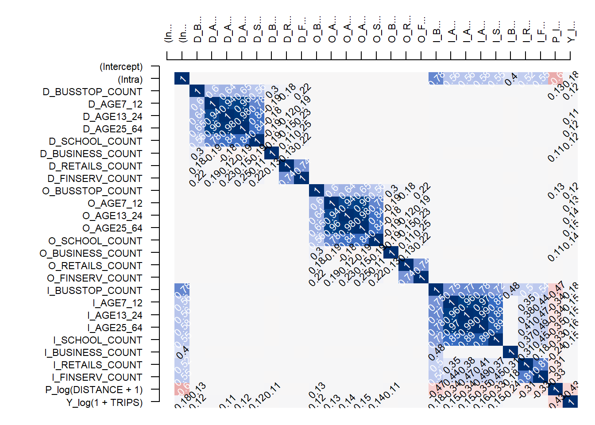

Code
devtools::install_github("LukeCe/spflow")
we manually install the git version instead of the one from CRAN.
devtools::install_github("LukeCe/spflow")Next, we will load spflow and other R packages into R environment.
pacman::p_load(tmap, sf, spdep, sp, Matrix, spflow, reshape2, knitr, tidyverse)Before we can calibrate Spatial Econometric Interaction Models by using spflow package, three data sets are required. They are: a spatial weights, a tibble data.frame consists of the origins, destination, flows, and distances between the origins and destination, and a tibble data.frame consists of the explanatory variables.
Shapefile will be imported into R environment as a sf tibble data.frame called mpsz
mpsz <- st_read(dsn = "../data/geospatial",
layer = "MPSZ-2019") %>%
st_transform(crs=3414) %>%
mutate(
SUBZONE_N = as.factor(SUBZONE_N),
SUBZONE_C = as.factor(SUBZONE_C),
PLN_AREA_N = as.factor(PLN_AREA_N),
PLN_AREA_C = as.factor(PLN_AREA_C),
REGION_N = as.factor(REGION_N),
REGION_C = as.factor(REGION_C),
)Reading layer `MPSZ-2019' from data source `C:\ameernoor\ISSS624\data\geospatial' using driver `ESRI Shapefile'
Simple feature collection with 332 features and 6 fields
Geometry type: MULTIPOLYGON
Dimension: XY
Bounding box: xmin: 103.6057 ymin: 1.158699 xmax: 104.0885 ymax: 1.470775
Geodetic CRS: WGS 84# check the output
glimpse(mpsz)Rows: 332
Columns: 7
$ SUBZONE_N <fct> MARINA EAST, INSTITUTION HILL, ROBERTSON QUAY, JURONG ISLAN…
$ SUBZONE_C <fct> MESZ01, RVSZ05, SRSZ01, WISZ01, MUSZ02, MPSZ05, WISZ03, WIS…
$ PLN_AREA_N <fct> MARINA EAST, RIVER VALLEY, SINGAPORE RIVER, WESTERN ISLANDS…
$ PLN_AREA_C <fct> ME, RV, SR, WI, MU, MP, WI, WI, SI, SI, BM, DT, SV, BM, BM,…
$ REGION_N <fct> CENTRAL REGION, CENTRAL REGION, CENTRAL REGION, WEST REGION…
$ REGION_C <fct> CR, CR, CR, WR, CR, CR, WR, WR, CR, CR, CR, CR, CR, CR, CR,…
$ geometry <MULTIPOLYGON [m]> MULTIPOLYGON (((33222.98 29..., MULTIPOLYGON (…busstop <- st_read(dsn = "../data/geospatial",
layer = "BusStop") %>%
st_transform(crs = 3414)Reading layer `BusStop' from data source `C:\ameernoor\ISSS624\data\geospatial' using driver `ESRI Shapefile'
Simple feature collection with 5159 features and 3 fields
Geometry type: POINT
Dimension: XY
Bounding box: xmin: 3970.122 ymin: 26482.1 xmax: 48280.78 ymax: 52983.82
Projected CRS: SVY21# check the data
glimpse(busstop)Rows: 5,159
Columns: 4
$ BUS_STOP_N <chr> "22069", "32071", "44331", "96081", "11561", "66191", "2338…
$ BUS_ROOF_N <chr> "B06", "B23", "B01", "B05", "B05", "B03", "B02A", "B02", "B…
$ LOC_DESC <chr> "OPP CEVA LOGISTICS", "AFT TRACK 13", "BLK 239", "GRACE IND…
$ geometry <POINT [m]> POINT (13576.31 32883.65), POINT (13228.59 44206.38),…In this study our analysis will be focused on planning subzone with bus stop. In view of this, the code chunk below will be used to perform Point-in-Polygon count analysis.
#####} eval: false mpsz_busstop <- st_intersection(busstop, mpsz) %>% filter = BUSSTOP_COUNT
centroids <- suppressWarnings({
st_point_on_surface(st_geometry(mpsz_busstop))
})
mpsz_nb <- list(
"by_contiguity" = poly2nb(mpsz_busstop),
"by_distance" = dnearneigh(centroids, d1 = 0, d2 = 5000),
"by_knn" = knn2nb(knearneigh(centroids,3))
)mpsz_nbschools <- read_rds("../data/rds/schools.rds")import the rest
Let us retrieve by using the code chunk below
mpsz_nb <- read_rds("../data/rds/mpsz_nb.rds")
mpsz_flow <- read_rds("../data/rds/mpsz_flow.rds")
mpsz_var <- read_rds("../data/rds/mpsz_var.rds")check the data
glimpse(mpsz_nb)List of 3
$ by_contiguity:List of 313
..$ : int [1:4] 2 3 66 69
..$ : int [1:7] 1 3 32 37 38 69 80
..$ : int [1:7] 1 2 38 65 66 67 71
..$ : int [1:4] 47 75 87 281
..$ : int [1:2] 6 9
..$ : int [1:8] 5 7 8 9 10 12 16 19
..$ : int [1:5] 6 11 12 19 23
..$ : int [1:4] 6 19 28 31
..$ : int [1:7] 5 6 10 13 17 18 70
..$ : int [1:5] 6 9 12 13 16
..$ : int [1:5] 7 14 15 19 23
..$ : int [1:6] 6 7 10 16 20 23
..$ : int [1:6] 9 10 16 17 21 22
..$ : int [1:3] 11 15 23
..$ : int [1:5] 11 14 19 23 25
..$ : int [1:9] 6 10 12 13 20 22 27 29 34
..$ : int [1:5] 9 13 18 21 41
..$ : int [1:5] 9 17 39 41 70
..$ : int [1:9] 6 7 8 11 15 25 28 30 31
..$ : int [1:6] 12 16 23 27 32 280
..$ : int [1:6] 13 17 22 36 40 41
..$ : int [1:7] 13 16 21 29 34 35 36
..$ : int [1:10] 7 11 12 14 15 20 25 26 32 280
..$ : int [1:3] 25 26 33
..$ : int [1:8] 15 19 23 24 26 30 33 67
..$ : int [1:6] 23 24 25 32 33 38
..$ : int [1:5] 16 20 29 32 37
..$ : int [1:5] 8 19 30 31 64
..$ : int [1:5] 16 22 27 34 37
..$ : int [1:5] 19 25 28 64 67
..$ : int [1:4] 8 19 28 64
..$ : int [1:9] 2 20 23 26 27 33 37 38 280
..$ : int [1:6] 24 25 26 32 38 67
..$ : int [1:6] 16 22 29 35 37 42
..$ : int [1:5] 22 34 36 42 85
..$ : int [1:8] 21 22 35 40 41 42 68 85
..$ : int [1:7] 2 27 29 32 34 42 80
..$ : int [1:6] 2 3 26 32 33 67
..$ : int [1:6] 18 41 51 54 70 76
..$ : int [1:6] 21 36 41 43 46 68
..$ : int [1:8] 17 18 21 36 39 40 46 76
..$ : int [1:6] 34 35 36 37 80 85
..$ : int [1:6] 40 46 48 68 85 278
..$ : int [1:4] 61 82 110 121
..$ : int [1:5] 62 73 79 83 116
..$ : int [1:8] 40 41 43 49 68 76 115 278
..$ : int [1:5] 4 58 84 281 282
..$ : int [1:5] 43 68 85 136 278
..$ : int [1:5] 46 54 76 115 119
..$ : int [1:7] 80 85 86 125 126 131 136
..$ : int [1:6] 39 54 70 118 120 127
..$ : int [1:5] 61 78 111 121 132
..$ : int [1:4] 75 87 128 134
..$ : int [1:7] 39 49 51 76 119 120 135
..$ : int [1:3] 63 130 267
..$ : int [1:4] 112 118 138 139
..$ : int [1:3] 60 117 126
..$ : int [1:7] 47 84 116 122 123 266 282
..$ : int [1:4] 87 134 137 281
..$ : int [1:8] 57 69 74 77 78 86 117 126
..$ : int [1:5] 44 52 71 78 121
..$ : int [1:6] 45 73 79 82 110 116
..$ : int [1:4] 55 114 129 130
..$ : int [1:5] 28 30 31 67 84
..$ : int [1:5] 3 67 71 73 79
..$ : int [1:5] 1 3 69 71 78
..$ : int [1:11] 3 25 30 33 38 64 65 72 73 81 ...
..$ : int [1:6] 36 40 43 46 48 85
..$ : int [1:8] 1 2 60 66 74 77 78 80
..$ : int [1:5] 9 18 39 51 118
..$ : int [1:7] 3 61 65 66 78 79 82
..$ : int [1:5] 67 73 81 83 84
..$ : int [1:7] 45 62 65 67 72 79 83
..$ : int [1:5] 60 69 77 78 80
..$ : int [1:4] 4 53 87 281
..$ : int [1:5] 39 41 46 49 54
..$ : int [1:5] 60 69 74 80 86
..$ : int [1:7] 52 60 61 66 69 71 74
..$ : int [1:7] 45 62 65 71 73 82 110
..$ : int [1:9] 2 37 42 50 69 74 77 85 86
..$ : int [1:5] 67 72 83 84 266
..$ : int [1:5] 44 62 71 79 110
..$ : int [1:6] 45 72 73 81 116 266
..$ : int [1:7] 47 58 64 67 72 81 266
..$ : int [1:9] 35 36 42 43 48 50 68 80 136
..$ : int [1:5] 50 60 77 80 126
..$ : int [1:6] 4 53 59 75 134 281
..$ : int [1:9] 91 105 108 109 129 130 133 203 287
..$ : int [1:6] 96 103 122 140 178 282
..$ : int [1:7] 100 127 138 141 175 181 271
..$ : int [1:7] 88 108 129 133 139 179 185
..$ : int [1:6] 101 125 131 136 177 194
..$ : int [1:6] 98 102 134 137 188 192
..$ : int [1:5] 126 131 142 176 177
..$ : int [1:7] 101 119 124 135 175 190 193
..$ : int [1:7] 89 102 103 137 178 202 282
..$ : int [1:6] 99 104 106 107 144 145
..$ : int [1:7] 93 134 143 149 188 192 196
..$ : int [1:7] 97 107 142 145 176 182 187
.. [list output truncated]
..- attr(*, "class")= chr "nb"
..- attr(*, "region.id")= chr [1:313] "1" "2" "3" "4" ...
..- attr(*, "call")= language poly2nb(pl = mpsz_busstop)
..- attr(*, "type")= chr "queen"
..- attr(*, "sym")= logi TRUE
$ by_distance :List of 313
..$ : int [1:91] 2 3 5 6 7 8 9 10 11 12 ...
..$ : int [1:90] 1 3 5 6 7 8 9 10 11 12 ...
..$ : int [1:91] 1 2 4 6 7 8 9 10 11 12 ...
..$ : int [1:56] 3 6 7 8 11 14 15 19 23 24 ...
..$ : int [1:34] 1 2 6 7 8 9 10 11 12 13 ...
..$ : int [1:62] 1 2 3 4 5 7 8 9 10 11 ...
..$ : int [1:74] 1 2 3 4 5 6 8 9 10 11 ...
..$ : int [1:64] 1 2 3 4 5 6 7 10 11 12 ...
..$ : int [1:53] 1 2 3 5 6 7 10 11 12 13 ...
..$ : int [1:74] 1 2 3 5 6 7 8 9 11 12 ...
..$ : int [1:75] 1 2 3 4 5 6 7 8 9 10 ...
..$ : int [1:75] 1 2 3 5 6 7 8 9 10 11 ...
..$ : int [1:75] 1 2 3 5 6 7 8 9 10 11 ...
..$ : int [1:76] 1 2 3 4 5 6 7 8 9 10 ...
..$ : int [1:76] 1 2 3 4 5 6 7 8 9 10 ...
..$ : int [1:81] 1 2 3 5 6 7 8 9 10 11 ...
..$ : int [1:64] 1 2 3 5 6 7 9 10 11 12 ...
..$ : int [1:44] 2 9 10 12 13 16 17 20 21 22 ...
..$ : int [1:73] 1 2 3 4 5 6 7 8 9 10 ...
..$ : int [1:80] 1 2 3 5 6 7 8 9 10 11 ...
..$ : int [1:72] 1 2 3 5 6 7 9 10 11 12 ...
..$ : int [1:82] 1 2 3 5 6 7 8 9 10 11 ...
..$ : int [1:79] 1 2 3 4 5 6 7 8 9 10 ...
..$ : int [1:81] 1 2 3 4 5 6 7 8 9 10 ...
..$ : int [1:82] 1 2 3 4 5 6 7 8 9 10 ...
..$ : int [1:81] 1 2 3 4 5 6 7 8 9 10 ...
..$ : int [1:83] 1 2 3 5 6 7 8 9 10 11 ...
..$ : int [1:75] 1 2 3 4 5 6 7 8 10 11 ...
..$ : int [1:86] 1 2 3 5 6 7 8 9 10 11 ...
..$ : int [1:78] 1 2 3 4 5 6 7 8 10 11 ...
..$ : int [1:67] 1 2 3 4 5 6 7 8 10 11 ...
..$ : int [1:86] 1 2 3 4 5 6 7 8 9 10 ...
..$ : int [1:83] 1 2 3 4 5 6 7 8 9 10 ...
..$ : int [1:87] 1 2 3 5 6 7 8 9 10 11 ...
..$ : int [1:85] 1 2 3 5 6 7 9 10 11 12 ...
..$ : int [1:75] 1 2 3 7 9 10 11 12 13 14 ...
..$ : int [1:89] 1 2 3 5 6 7 8 9 10 11 ...
..$ : int [1:86] 1 2 3 4 5 6 7 8 9 10 ...
..$ : int [1:41] 9 10 13 17 18 21 22 29 34 35 ...
..$ : int [1:59] 1 2 9 10 12 13 16 17 18 20 ...
..$ : int [1:49] 2 9 10 13 16 17 18 20 21 22 ...
..$ : int [1:89] 1 2 3 6 7 9 10 11 12 13 ...
..$ : int [1:63] 1 2 9 10 13 16 17 18 20 21 ...
..$ : int [1:97] 1 2 3 4 6 7 8 10 11 12 ...
..$ : int [1:93] 1 2 3 4 6 7 8 11 12 14 ...
..$ : int [1:54] 9 10 13 16 17 18 21 22 29 34 ...
..$ : int [1:71] 1 2 3 4 7 8 11 14 15 19 ...
..$ : int [1:65] 1 2 9 10 13 16 17 18 20 21 ...
..$ : int [1:43] 17 18 21 35 36 39 40 41 42 43 ...
..$ : int [1:87] 1 2 3 7 9 10 11 12 13 14 ...
..$ : int [1:38] 18 39 40 41 43 46 48 49 54 56 ...
..$ : int [1:99] 1 2 3 6 7 8 10 11 12 13 ...
..$ : int [1:16] 59 75 87 93 98 102 128 134 137 143 ...
..$ : int [1:41] 18 36 39 40 41 43 46 48 49 50 ...
..$ : int [1:12] 63 88 105 109 113 114 129 130 146 203 ...
..$ : int [1:30] 49 51 54 70 76 90 91 95 100 112 ...
..$ : int [1:96] 1 2 3 7 10 11 12 13 14 15 ...
..$ : int [1:84] 1 2 3 4 7 8 11 14 15 19 ...
..$ : int [1:35] 4 31 47 53 58 64 75 81 83 84 ...
..$ : int [1:101] 1 2 3 6 7 8 9 10 11 12 ...
..$ : int [1:95] 1 2 3 4 6 7 8 10 11 12 ...
..$ : int [1:95] 1 2 3 4 6 7 8 10 11 12 ...
..$ : int [1:13] 55 88 91 105 108 109 113 114 129 130 ...
..$ : int [1:85] 1 2 3 4 6 7 8 10 11 12 ...
..$ : int [1:92] 1 2 3 4 6 7 8 10 11 12 ...
..$ : int [1:95] 1 2 3 4 6 7 8 9 10 11 ...
..$ : int [1:85] 1 2 3 4 6 7 8 10 11 12 ...
..$ : int [1:66] 1 2 3 9 10 12 13 16 17 18 ...
..$ : int [1:99] 1 2 3 6 7 8 9 10 11 12 ...
..$ : int [1:24] 17 18 39 40 41 43 46 48 49 51 ...
..$ : int [1:96] 1 2 3 4 6 7 8 9 10 11 ...
..$ : int [1:89] 1 2 3 4 6 7 8 10 11 12 ...
..$ : int [1:92] 1 2 3 4 6 7 8 10 11 12 ...
..$ : int [1:100] 1 2 3 6 7 8 9 10 11 12 ...
..$ : int [1:21] 4 47 53 58 59 87 89 93 96 98 ...
..$ : int [1:39] 17 18 21 35 36 39 40 41 42 43 ...
..$ : int [1:97] 1 2 3 6 7 8 9 10 11 12 ...
..$ : int [1:97] 1 2 3 6 7 8 9 10 11 12 ...
..$ : int [1:94] 1 2 3 4 6 7 8 10 11 12 ...
..$ : int [1:93] 1 2 3 6 7 8 9 10 11 12 ...
..$ : int [1:90] 1 2 3 4 6 7 8 11 12 14 ...
..$ : int [1:95] 1 2 3 4 6 7 8 10 11 12 ...
..$ : int [1:94] 1 2 3 4 6 7 8 10 11 12 ...
..$ : int [1:88] 1 2 3 4 6 7 8 11 12 14 ...
..$ : int [1:74] 1 2 3 9 10 12 13 16 17 18 ...
..$ : int [1:93] 1 2 3 7 9 10 11 12 13 14 ...
..$ : int [1:27] 4 47 53 58 59 75 84 89 93 96 ...
..$ : int [1:21] 55 63 91 105 108 109 113 114 129 130 ...
..$ : int [1:68] 3 4 44 45 47 52 58 59 61 62 ...
..$ : int [1:45] 49 51 54 56 76 91 95 100 101 112 ...
..$ : int [1:32] 56 63 88 90 100 108 109 112 113 114 ...
..$ : int [1:51] 35 36 39 40 41 42 43 46 48 49 ...
..$ : int [1:27] 53 59 75 87 89 96 98 102 103 128 ...
..$ : int [1:71] 1 2 3 22 27 29 34 35 36 37 ...
..$ : int [1:47] 39 43 46 48 49 51 54 56 76 85 ...
..$ : int [1:59] 4 44 45 47 58 59 62 64 72 73 ...
..$ : int [1:82] 1 3 33 38 44 45 47 52 57 58 ...
..$ : int [1:23] 53 59 75 87 93 102 128 134 137 143 ...
..$ : int [1:79] 1 2 3 38 44 45 50 52 57 58 ...
.. [list output truncated]
..- attr(*, "class")= chr "nb"
..- attr(*, "region.id")= chr [1:313] "1" "2" "3" "4" ...
..- attr(*, "call")= language dnearneigh(x = centroids, d1 = 0, d2 = 5000)
..- attr(*, "dnn")= num [1:2] 0 5000
..- attr(*, "bounds")= chr [1:2] "GE" "LE"
..- attr(*, "nbtype")= chr "distance"
..- attr(*, "sym")= logi TRUE
$ by_knn :List of 313
..$ : int [1:3] 2 66 69
..$ : int [1:3] 1 37 69
..$ : int [1:3] 38 65 71
..$ : int [1:3] 31 47 281
..$ : int [1:3] 6 7 12
..$ : int [1:3] 7 8 19
..$ : int [1:3] 11 14 23
..$ : int [1:3] 19 28 31
..$ : int [1:3] 10 13 17
..$ : int [1:3] 13 16 22
..$ : int [1:3] 7 14 15
..$ : int [1:3] 7 20 23
..$ : int [1:3] 10 16 22
..$ : int [1:3] 11 15 23
..$ : int [1:3] 11 14 25
..$ : int [1:3] 10 13 29
..$ : int [1:3] 9 21 36
..$ : int [1:3] 17 40 41
..$ : int [1:3] 8 11 15
..$ : int [1:3] 12 27 280
..$ : int [1:3] 17 35 36
..$ : int [1:3] 13 34 35
..$ : int [1:3] 11 14 280
..$ : int [1:3] 25 26 33
..$ : int [1:3] 24 26 30
..$ : int [1:3] 24 25 33
..$ : int [1:3] 20 29 37
..$ : int [1:3] 25 30 31
..$ : int [1:3] 16 27 34
..$ : int [1:3] 24 25 28
..$ : int [1:3] 8 28 30
..$ : int [1:3] 23 38 280
..$ : int [1:3] 24 26 38
..$ : int [1:3] 22 29 35
..$ : int [1:3] 22 34 42
..$ : int [1:3] 21 35 68
..$ : int [1:3] 2 27 29
..$ : int [1:3] 3 26 33
..$ : int [1:3] 41 46 76
..$ : int [1:3] 36 41 68
..$ : int [1:3] 18 39 40
..$ : int [1:3] 34 35 80
..$ : int [1:3] 46 48 85
..$ : int [1:3] 61 82 110
..$ : int [1:3] 62 81 83
..$ : int [1:3] 43 48 278
..$ : int [1:3] 4 58 266
..$ : int [1:3] 43 85 278
..$ : int [1:3] 54 76 119
..$ : int [1:3] 80 85 131
..$ : int [1:3] 54 118 120
..$ : int [1:3] 61 78 111
..$ : int [1:3] 75 93 134
..$ : int [1:3] 51 76 120
..$ : int [1:3] 63 130 267
..$ : int [1:3] 112 138 139
..$ : int [1:3] 60 86 117
..$ : int [1:3] 122 123 266
..$ : int [1:3] 75 87 137
..$ : int [1:3] 57 74 86
..$ : int [1:3] 44 52 82
..$ : int [1:3] 45 83 110
..$ : int [1:3] 55 114 130
..$ : int [1:3] 67 72 84
..$ : int [1:3] 3 67 73
..$ : int [1:3] 1 71 78
..$ : int [1:3] 33 65 73
..$ : int [1:3] 40 43 85
..$ : int [1:3] 1 74 78
..$ : int [1:3] 39 51 76
..$ : int [1:3] 3 66 82
..$ : int [1:3] 73 81 83
..$ : int [1:3] 72 79 82
..$ : int [1:3] 60 69 77
..$ : int [1:3] 59 87 281
..$ : int [1:3] 39 49 54
..$ : int [1:3] 74 80 86
..$ : int [1:3] 52 66 69
..$ : int [1:3] 44 73 82
..$ : int [1:3] 42 77 86
..$ : int [1:3] 72 83 266
..$ : int [1:3] 44 73 79
..$ : int [1:3] 45 62 81
..$ : int [1:3] 72 81 266
..$ : int [1:3] 43 48 68
..$ : int [1:3] 60 74 77
..$ : int [1:3] 59 75 281
..$ : int [1:3] 109 129 130
..$ : int [1:3] 96 103 140
..$ : int [1:3] 100 141 181
..$ : int [1:3] 108 133 179
..$ : int [1:3] 125 136 177
..$ : int [1:3] 134 188 192
..$ : int [1:3] 126 142 176
..$ : int [1:3] 135 141 193
..$ : int [1:3] 89 102 178
..$ : int [1:3] 104 106 107
..$ : int [1:3] 143 149 192
..$ : int [1:3] 107 182 187
.. [list output truncated]
..- attr(*, "region.id")= chr [1:313] "1" "2" "3" "4" ...
..- attr(*, "call")= language knearneigh(x = centroids, k = 3)
..- attr(*, "sym")= logi FALSE
..- attr(*, "type")= chr "knn"
..- attr(*, "knn-k")= num 3
..- attr(*, "class")= chr "nb"glimpse(mpsz_flow)Rows: 97,969
Columns: 4
$ ORIGIN_SZ <chr> "RVSZ05", "SRSZ01", "MUSZ02", "MPSZ05", "SISZ01", "BMSZ17", …
$ DESTIN_SZ <chr> "RVSZ05", "RVSZ05", "RVSZ05", "RVSZ05", "RVSZ05", "RVSZ05", …
$ DISTANCE <dbl> 0.0000, 305.7370, 951.8314, 5254.0664, 4975.0021, 3176.1592,…
$ TRIPS <dbl> 67, 549, 0, 0, 0, 0, 0, 0, 0, 0, 0, 7, 0, 0, 0, 0, 0, 0, 0, …glimpse(mpsz_var)Rows: 313
Columns: 14
$ SZ_NAME <chr> "INSTITUTION HILL", "ROBERTSON QUAY", "FORT CANNING", "…
$ SZ_CODE <chr> "RVSZ05", "SRSZ01", "MUSZ02", "MPSZ05", "SISZ01", "BMSZ…
$ BUSSTOP_COUNT <int> 2, 10, 6, 2, 1, 10, 5, 4, 21, 11, 2, 9, 6, 1, 4, 7, 24,…
$ AGE7_12 <dbl> 330, 320, 0, 0, 200, 0, 0, 0, 350, 470, 0, 300, 390, 0,…
$ AGE13_24 <dbl> 360, 350, 10, 0, 260, 0, 0, 0, 460, 1160, 0, 760, 890, …
$ AGE25_64 <dbl> 2260, 2200, 30, 0, 1440, 0, 0, 0, 2600, 6260, 630, 4350…
$ geometry <MULTIPOLYGON [m]> MULTIPOLYGON (((28481.45 30..., MULTIPOLYG…
$ SCHOOL_COUNT <int> 1, 0, 0, 0, 0, 0, 0, 0, 0, 2, 0, 1, 1, 0, 0, 0, 1, 0, 0…
$ BUSINESS_COUNT <int> 6, 4, 7, 0, 1, 11, 15, 1, 10, 1, 17, 6, 0, 0, 51, 2, 3,…
$ RETAILS_COUNT <int> 26, 207, 17, 0, 84, 14, 52, 0, 460, 34, 263, 55, 37, 1,…
$ FINSERV_COUNT <int> 3, 18, 0, 0, 29, 4, 6, 0, 34, 4, 26, 4, 3, 6, 59, 3, 8,…
$ ENTERTN_COUNT <int> 0, 6, 3, 0, 2, 0, 0, 0, 1, 0, 0, 0, 0, 0, 3, 0, 0, 0, 0…
$ FB_COUNT <int> 4, 38, 4, 0, 38, 15, 5, 0, 20, 0, 9, 25, 0, 0, 9, 1, 3,…
$ LR_COUNT <int> 3, 11, 7, 0, 20, 0, 0, 0, 19, 2, 4, 4, 1, 1, 13, 0, 17,…For our model, we choose the contiguity based neighborhood structure.
mpsz_net <- spflow_network(
id_net = "sg",
node_neighborhood =
nb2mat(mpsz_nb$by_contiguity),
node_data = mpsz_var,
node_key_column = "SZ_CODE")
mpsz_netSpatial network nodes with id: sg
--------------------------------------------------
Number of nodes: 313
Average number of links per node: 6.077
Density of the neighborhood matrix: 1.94% (non-zero connections)
Data on nodes:
SZ_NAME SZ_CODE BUSSTOP_COUNT AGE7_12 AGE13_24 AGE25_64
1 INSTITUTION HILL RVSZ05 2 330 360 2260
2 ROBERTSON QUAY SRSZ01 10 320 350 2200
3 FORT CANNING MUSZ02 6 0 10 30
4 MARINA EAST (MP) MPSZ05 2 0 0 0
5 SENTOSA SISZ01 1 200 260 1440
6 CITY TERMINALS BMSZ17 10 0 0 0
--- --- --- --- --- --- ---
308 NEE SOON YSSZ07 12 90 140 590
309 UPPER THOMSON BSSZ01 47 1590 3660 15980
310 SHANGRI-LA AMSZ05 12 810 1920 9650
311 TOWNSVILLE AMSZ04 9 980 2000 11320
312 MARYMOUNT BSSZ02 25 1610 4060 16860
313 TUAS VIEW EXTENSION TSSZ06 11 0 0 0
SCHOOL_COUNT BUSINESS_COUNT RETAILS_COUNT FINSERV_COUNT ENTERTN_COUNT
1 1 6 26 3 0
2 0 4 207 18 6
3 0 7 17 0 3
4 0 0 0 0 0
5 0 1 84 29 2
6 0 11 14 4 0
--- --- --- --- --- ---
308 0 0 7 0 0
309 3 21 305 30 0
310 3 0 53 9 0
311 1 0 83 11 0
312 3 19 135 8 0
313 0 53 3 1 0
FB_COUNT LR_COUNT COORD_X COORD_Y
1 4 3 103.84 1.29
2 38 11 103.84 1.29
3 4 7 103.85 1.29
4 0 0 103.88 1.29
5 38 20 103.83 1.25
6 15 0 103.85 1.26
--- --- --- --- ---
308 0 0 103.81 1.4
309 5 11 103.83 1.36
310 0 0 103.84 1.37
311 1 1 103.85 1.36
312 3 11 103.84 1.35
313 0 0 103.61 1.26mpsz_net is defined as a spatial interaction network with several parameters:
id_net: A unique identifier for the network, set as “sg” in this case.node_neighborhood: A matrix that represents the neighborhood structure of the nodes (areas or locations) in the network, created from mpsz_nb$by_contiguity using the nb2mat function (which converts neighbor objects into matrices).node_data: A data frame containing variables associated with each node (e.g., demographic data, economic indicators), here specified as mpsz_var.node_key_column: The column in node_data that uniquely identifies each node, set as “SZ_CODE”.mpsz_net, displays the created spatial interaction network.Do for destinations.
In spflow package, spflow_network_pair()
mpsz_net_pairs <- spflow_network_pair(
id_orig_net = "sg",
id_dest_net = "sg",
pair_data = mpsz_flow,
orig_key_column = "ORIGIN_SZ",
dest_key_column = "DESTIN_SZ"
)
mpsz_net_pairsSpatial network pair with id: sg_sg
--------------------------------------------------
Origin network id: sg (with 313 nodes)
Destination network id: sg (with 313 nodes)
Number of pairs: 97969
Completeness of pairs: 100.00% (97969/97969)
Data on node-pairs:
DESTIN_SZ ORIGIN_SZ DISTANCE TRIPS
1 RVSZ05 RVSZ05 0 67
314 SRSZ01 RVSZ05 305.74 251
627 MUSZ02 RVSZ05 951.83 0
940 MPSZ05 RVSZ05 5254.07 0
1253 SISZ01 RVSZ05 4975 0
1566 BMSZ17 RVSZ05 3176.16 0
--- --- --- --- ---
96404 YSSZ07 TSSZ06 26972.97 0
96717 BSSZ01 TSSZ06 25582.48 0
97030 AMSZ05 TSSZ06 26714.79 0
97343 AMSZ04 TSSZ06 27572.74 0
97656 BSSZ02 TSSZ06 26681.7 0
97969 TSSZ06 TSSZ06 0 270Both data sources are consistent. For example, if some of the origins in the sp_network_pair-class are not identified with the nodes in the sp_network_nodes-class an error will be raised.
mpsz_multi_net <- spflow_network_multi(mpsz_net,
mpsz_net_pairs)
mpsz_multi_netCollection of spatial network nodes and pairs
--------------------------------------------------
Contains 1 spatial network nodes
With id : sg
Contains 1 spatial network pairs
With id : sg_sg
Availability of origin-destination pair information:
ID_ORIG_NET ID_DEST_NET ID_NET_PAIR COMPLETENESS C_PAIRS C_ORIG C_DEST
sg sg sg_sg 100.00% 97969/97969 313/313 313/313the next step is using correlation analysis to check for multicollinearity. it is done using pair_cor() to create the correlation matrix and cor_image() to plot the correlation matrix into a correlogram.
#} eval: false
cor_formula <- log(1+ TRIPS) ~
BUSSTOP_COUNT +
AGE7_12 +
AGE13_24 +
AGE25_64 +
SCHOOL_COUNT +
BUSINESS_COUNT +
RETAILS_COUNT +
FINSERV_COUNT +
P_(log(DISTANCE + 1))
cor_mat <- pair_cor(
mpsz_multi_net,
spflow_formula = cor_formula,
add_lags_x = FALSE
)
summary(cor_mat) (Intercept) (Intra) D_BUSSTOP_COUNT D_AGE7_12
Min. : NA Min. :-0.6000 Min. :0.0000 Min. :-0.19137
1st Qu.: NA 1st Qu.: 0.0000 1st Qu.:0.0000 1st Qu.: 0.00000
Median : NA Median : 0.0000 Median :0.0279 Median : 0.02124
Mean :NaN Mean : 0.1882 Mean :0.1688 Mean : 0.17425
3rd Qu.: NA 3rd Qu.: 0.5343 3rd Qu.:0.1978 3rd Qu.: 0.09379
Max. : NA Max. : 1.0000 Max. :1.0000 Max. : 1.00000
NA's :28 NA's :1 NA's :1 NA's :1
D_AGE13_24 D_AGE25_64 D_SCHOOL_COUNT D_BUSINESS_COUNT
Min. :-0.18178 Min. :-0.18513 Min. :-0.18700 Min. :-0.191368
1st Qu.: 0.00000 1st Qu.: 0.00000 1st Qu.: 0.00000 1st Qu.:-0.008893
Median : 0.02271 Median : 0.02303 Median : 0.01979 Median : 0.000000
Mean : 0.18286 Mean : 0.18580 Mean : 0.16638 Mean : 0.027354
3rd Qu.: 0.11567 3rd Qu.: 0.13622 3rd Qu.: 0.11500 3rd Qu.: 0.003110
Max. : 1.00000 Max. : 1.00000 Max. : 1.00000 Max. : 1.000000
NA's :1 NA's :1 NA's :1 NA's :1
D_RETAILS_COUNT D_FINSERV_COUNT O_BUSSTOP_COUNT O_AGE7_12
Min. :-0.067274 Min. :-0.056597 Min. :0.0000 Min. :-0.19137
1st Qu.: 0.000000 1st Qu.: 0.000000 1st Qu.:0.0000 1st Qu.: 0.00000
Median : 0.006356 Median : 0.008892 Median :0.0279 Median : 0.02124
Mean : 0.096878 Mean : 0.108154 Mean :0.1688 Mean : 0.17522
3rd Qu.: 0.098401 3rd Qu.: 0.126999 3rd Qu.:0.1978 3rd Qu.: 0.10686
Max. : 1.000000 Max. : 1.000000 Max. :1.0000 Max. : 1.00000
NA's :1 NA's :1 NA's :1 NA's :1
O_AGE13_24 O_AGE25_64 O_SCHOOL_COUNT O_BUSINESS_COUNT
Min. :-0.18178 Min. :-0.18513 Min. :-0.18700 Min. :-0.191368
1st Qu.: 0.00000 1st Qu.: 0.00000 1st Qu.: 0.00000 1st Qu.:-0.008893
Median : 0.02271 Median : 0.02303 Median : 0.01979 Median : 0.000000
Mean : 0.18382 Mean : 0.18682 Mean : 0.16728 Mean : 0.026554
3rd Qu.: 0.12868 3rd Qu.: 0.14988 3rd Qu.: 0.12718 3rd Qu.: 0.003110
Max. : 1.00000 Max. : 1.00000 Max. : 1.00000 Max. : 1.000000
NA's :1 NA's :1 NA's :1 NA's :1
O_RETAILS_COUNT O_FINSERV_COUNT I_BUSSTOP_COUNT I_AGE7_12
Min. :-0.067274 Min. :-0.056597 Min. :-0.46608 Min. :-0.33712
1st Qu.: 0.000000 1st Qu.: 0.000000 1st Qu.: 0.01519 1st Qu.: 0.01840
Median : 0.006356 Median : 0.008892 Median : 0.02303 Median : 0.04466
Mean : 0.096696 Mean : 0.108262 Mean : 0.23445 Mean : 0.22889
3rd Qu.: 0.098401 3rd Qu.: 0.128450 3rd Qu.: 0.52082 3rd Qu.: 0.39584
Max. : 1.000000 Max. : 1.000000 Max. : 1.00000 Max. : 1.00000
NA's :1 NA's :1 NA's :1 NA's :1
I_AGE13_24 I_AGE25_64 I_SCHOOL_COUNT I_BUSINESS_COUNT
Min. :-0.33836 Min. :-0.34915 Min. :-0.32910 Min. :-0.240081
1st Qu.: 0.02015 1st Qu.: 0.02064 1st Qu.: 0.01830 1st Qu.:-0.009503
Median : 0.04597 Median : 0.04527 Median : 0.03967 Median : 0.015407
Mean : 0.23500 Mean : 0.23850 Mean : 0.22230 Mean : 0.096704
3rd Qu.: 0.42210 3rd Qu.: 0.44862 3rd Qu.: 0.41029 3rd Qu.: 0.083898
Max. : 1.00000 Max. : 1.00000 Max. : 1.00000 Max. : 1.000000
NA's :1 NA's :1 NA's :1 NA's :1
I_RETAILS_COUNT I_FINSERV_COUNT P_log(DISTANCE + 1) Y_log(1 + TRIPS)
Min. :-0.31203 Min. :-0.33019 Min. :-0.60001 Min. :-0.42738
1st Qu.: 0.00602 1st Qu.: 0.01028 1st Qu.:-0.32964 1st Qu.: 0.07293
Median : 0.03559 Median : 0.03479 Median :-0.05526 Median : 0.11732
Mean : 0.17265 Mean : 0.18377 Mean :-0.08042 Mean : 0.11887
3rd Qu.: 0.35867 3rd Qu.: 0.44747 3rd Qu.: 0.04883 3rd Qu.: 0.14810
Max. : 1.00000 Max. : 1.00000 Max. : 1.00000 Max. : 1.00000
NA's :1 NA's :1 NA's :1 NA's :1 colnames(cor_mat) <- paste0(
substr(colnames(cor_mat),1,3),"..."
)
cor_image(cor_mat)
base_model <- spflow(
spflow_formula = log(1 + TRIPS) ~
O_(BUSSTOP_COUNT +
AGE25_64) +
D_(SCHOOL_COUNT +
BUSINESS_COUNT +
RETAILS_COUNT +
FINSERV_COUNT) +
P_(log(DISTANCE + 1)),
spflow_networks = mpsz_multi_net)
base_model--------------------------------------------------
Spatial interaction model estimated by: MLE
Spatial correlation structure: SDM (model_9)
Dependent variable: log(1 + TRIPS)
--------------------------------------------------
Coefficients:
est sd t.stat p.val
rho_d 0.680 0.004 192.553 0.000
rho_o 0.678 0.004 187.733 0.000
rho_w -0.396 0.006 -65.591 0.000
(Intercept) 0.410 0.065 6.266 0.000
(Intra) 1.313 0.081 16.263 0.000
D_SCHOOL_COUNT 0.017 0.002 7.885 0.000
D_SCHOOL_COUNT.lag1 0.002 0.004 0.551 0.581
D_BUSINESS_COUNT 0.000 0.000 3.015 0.003
D_BUSINESS_COUNT.lag1 0.000 0.000 -0.249 0.804
D_RETAILS_COUNT 0.000 0.000 -0.306 0.759
D_RETAILS_COUNT.lag1 0.000 0.000 0.152 0.880
D_FINSERV_COUNT 0.002 0.000 6.787 0.000
D_FINSERV_COUNT.lag1 -0.002 0.001 -3.767 0.000
O_BUSSTOP_COUNT 0.002 0.000 6.807 0.000
O_BUSSTOP_COUNT.lag1 -0.001 0.000 -2.364 0.018
O_AGE25_64 0.000 0.000 7.336 0.000
O_AGE25_64.lag1 0.000 0.000 -2.797 0.005
P_log(DISTANCE + 1) -0.050 0.007 -6.793 0.000
--------------------------------------------------
R2_corr: 0.6942944
Observations: 97969
Model coherence: Validatednote that many of the lag1 are statistically significant. this signifies that neighboring area can actually affect the number of trips as well.
old_par <- par(mfrow = c(1, 3),
mar = c(2,2,2,2))
spflow_moran_plots(base_model)par(old_par)corr_residual <- pair_cor(base_model)
colnames(corr_residual) <- substr(colnames(corr_residual), 1,3)
cor_image(corr_residual)
the original code is for model_8
spflow_formula <- log(1 + TRIPS) ~
O_(BUSSTOP_COUNT +
AGE25_64) +
D_(SCHOOL_COUNT +
BUSINESS_COUNT +
RETAILS_COUNT +
FINSERV_COUNT) +
P_(log(DISTANCE + 1))
model_control <- spflow_control(
estimation_method = "mle",
model = "model_8")
mle_model8 <- spflow(
spflow_formula,
spflow_networks = mpsz_multi_net,
estimation_control = model_control)
mle_model8--------------------------------------------------
Spatial interaction model estimated by: MLE
Spatial correlation structure: SDM (model_8)
Dependent variable: log(1 + TRIPS)
--------------------------------------------------
Coefficients:
est sd t.stat p.val
rho_d 0.689 0.003 196.832 0.000
rho_o 0.687 0.004 192.214 0.000
rho_w -0.473 0.003 -142.469 0.000
(Intercept) 1.086 0.049 22.275 0.000
(Intra) 0.840 0.075 11.255 0.000
D_SCHOOL_COUNT 0.019 0.002 8.896 0.000
D_SCHOOL_COUNT.lag1 0.019 0.004 5.130 0.000
D_BUSINESS_COUNT 0.000 0.000 3.328 0.001
D_BUSINESS_COUNT.lag1 0.000 0.000 1.664 0.096
D_RETAILS_COUNT 0.000 0.000 -0.414 0.679
D_RETAILS_COUNT.lag1 0.000 0.000 -0.171 0.864
D_FINSERV_COUNT 0.002 0.000 6.150 0.000
D_FINSERV_COUNT.lag1 -0.003 0.001 -4.601 0.000
O_BUSSTOP_COUNT 0.003 0.000 7.676 0.000
O_BUSSTOP_COUNT.lag1 0.000 0.000 0.552 0.581
O_AGE25_64 0.000 0.000 6.870 0.000
O_AGE25_64.lag1 0.000 0.000 -0.462 0.644
P_log(DISTANCE + 1) -0.125 0.005 -22.865 0.000
--------------------------------------------------
R2_corr: 0.6965974
Observations: 97969
Model coherence: Validatednext, change to model_1
spflow_formula <- log(1 + TRIPS) ~
O_(BUSSTOP_COUNT +
AGE25_64) +
D_(SCHOOL_COUNT +
BUSINESS_COUNT +
RETAILS_COUNT +
FINSERV_COUNT) +
P_(log(DISTANCE + 1))
model_control <- spflow_control(
estimation_method = "mle",
model = "model_1")
mle_model1 <- spflow(
spflow_formula,
spflow_networks = mpsz_multi_net,
estimation_control = model_control)
mle_model1--------------------------------------------------
Spatial interaction model estimated by: OLS
Spatial correlation structure: SLX (model_1)
Dependent variable: log(1 + TRIPS)
--------------------------------------------------
Coefficients:
est sd t.stat p.val
(Intercept) 11.384 0.069 164.255 0.000
(Intra) -6.006 0.112 -53.393 0.000
D_SCHOOL_COUNT 0.093 0.003 28.599 0.000
D_SCHOOL_COUNT.lag1 0.255 0.006 44.905 0.000
D_BUSINESS_COUNT 0.001 0.000 10.036 0.000
D_BUSINESS_COUNT.lag1 0.003 0.000 18.274 0.000
D_RETAILS_COUNT 0.000 0.000 -1.940 0.052
D_RETAILS_COUNT.lag1 0.000 0.000 -2.581 0.010
D_FINSERV_COUNT 0.005 0.000 10.979 0.000
D_FINSERV_COUNT.lag1 -0.016 0.001 -17.134 0.000
O_BUSSTOP_COUNT 0.014 0.001 25.865 0.000
O_BUSSTOP_COUNT.lag1 0.015 0.001 21.728 0.000
O_AGE25_64 0.000 0.000 14.479 0.000
O_AGE25_64.lag1 0.000 0.000 14.452 0.000
P_log(DISTANCE + 1) -1.281 0.008 -165.327 0.000
--------------------------------------------------
R2_corr: 0.2831458
Observations: 97969
Model coherence: Validated